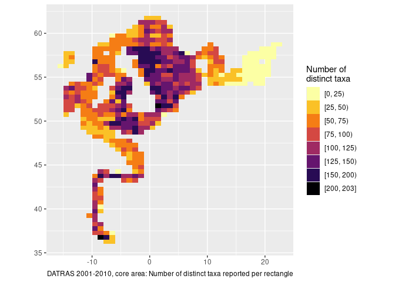

{obus} is a temporary experimental package used to explore various DATRAS data connections and wrapper functions to make life a little easier for everyday user. Some of this may be taken up in a more offical package.
Installation
You can install the development version of imbus from GitHub with:
# install.packages("pak")
#pak::pak("einarhjorleifsson/obus")A little peek
library(tidyverse)
hl |> glimpse()
#> Rows: ??
#> Columns: 8
#> Database: DuckDB 1.4.3 [unknown@Linux 5.10.0-33-amd64:R 4.4.1/:memory:]
#> $ .id <chr> "BITS:1991:1:DK:26D4:GRT:98:53", "BITS:1991:1:SE:77AR:FOT:94:…
#> $ latin <chr> "Merlangius merlangus", "Merlangius merlangus", "Merlangius m…
#> $ length <dbl> 40, 25, 21, 24, 26, 19, 20, 21, 22, 23, 32, 34, 39, 35, 12, 1…
#> $ Sex <chr> NA, NA, NA, NA, NA, NA, NA, NA, NA, NA, NA, NA, NA, NA, NA, N…
#> $ DevStage <chr> NA, NA, NA, NA, NA, NA, NA, NA, NA, NA, NA, NA, NA, NA, NA, N…
#> $ n <dbl> 1, 1, 1, 1, 1, 1, 1, 5, 1, 2, 1, 2, 1, 1, 1, 6, 4, 3, 8, 2, 4…
#> $ cpue <dbl> 1, 1, 1, 1, 1, 1, 1, 5, 1, 2, 1, 2, 1, 1, 1, 6, 4, 3, 8, 2, 4…
#> $ species <chr> "whiting", "whiting", "whiting", "whiting", "whiting", "whiti…A little exploration
library(santoku)
#>
#> Attaching package: 'santoku'
#> The following object is masked from 'package:tidyr':
#>
#> chop
# Grid resolution
dx <- 1
dy <- dx / 2
# Limit analysis to certain time and space
hh |>
filter(Year %in% 2001:2010,
between(ShootLong, -20, 25),
between(ShootLat, -Inf, 65)) |>
# assign coordinates to grid
mutate(lon = ShootLong%/%dx * dx + dx/2,
lat = ShootLat%/%dy * dy + dy/2) |>
left_join(hl |>
select(.id, latin),
by = join_by(.id)) |>
# analyse by grid
group_by(lon, lat) |>
summarise(n_taxa = n_distinct(latin),
.groups = "drop") |>
# load data into R memory because santoku::chop not in duckdb lingo
# chop is also nicer than cut - keeps things more orderly
collect() |>
mutate(n_taxa = chop(n_taxa, breaks = c(0, 25, 50, 75, 100, 125, 150, 200))) |>
ggplot(aes(lon, lat, fill = n_taxa)) +
geom_tile() +
scale_fill_viridis_d(option = "inferno", direction = -1) +
coord_quickmap() +
labs(x = NULL, y = NULL, fill = "Number of\ndistinct taxa",
caption = "DATRAS 2001-2010, core area: Number of distinct taxa reported per rectangle")